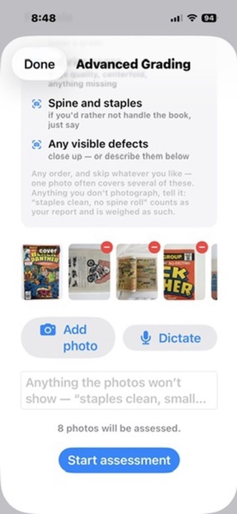
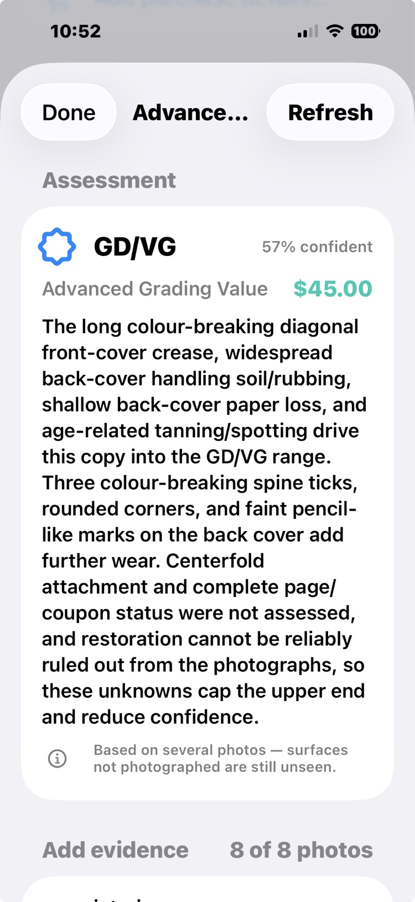
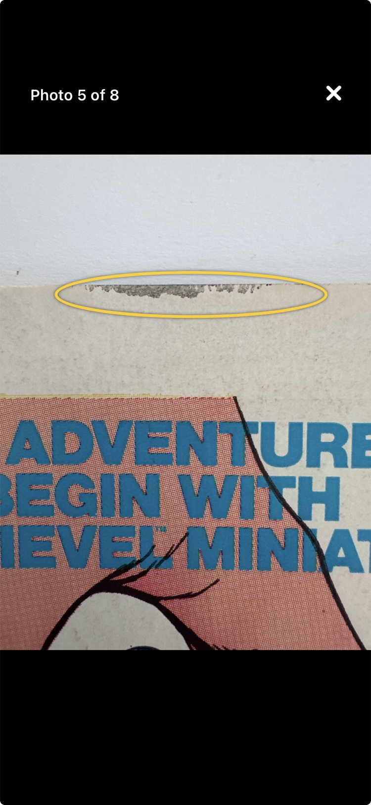

How To
Advanced Grading
An ordinary scan is a simple cover inspection: excellent for identifying a book, rough as a grade, and the app treats it that way. It also carries no price. Pricing is a separate ask, and an estimate is only as good as the grade behind it, so the app will not hang a number on a book it has barely seen. When a book matters enough that the grade changes a decision, give it the close look: Advanced Grading.
When to use it
Run it on the books where being wrong costs something: a book you are deciding whether to send to a professional grading service, a book you want an asking price you can defend, a key issue you are about to buy or sell. For a few credits it looks at the book the way a grader would, instead of the way a camera glances at a cover.
The photos to take
The grading sheet accepts up to eight photos and lists the views that help most. Work with the book flat on a table and take a few minutes:
- The front cover, retaken properly: flat light, square on, every corner in frame. The quick capture from scan day identifies the book; it is not good enough to grade from. Long-press the new photo and Use as Cover makes it the book's cover photo right from the sheet.
- The back cover: it can only lower a grade, which is exactly why it has to be seen.
- Interior pages: paper quality, completeness, the centerfold.
- The spine and staples.
- Close-ups of anything your own eyes flag: a crease, a rough edge, a stain.
Anything you can't photograph, report in words on the sheet, and it is weighed as your report. The app starts honest either way: with only a cover attached, it tells you which checks it won't be able to assess.
The checklist and the grade
The assessment walks a 16-point condition checklist (spine, corners, edges, gloss, pages, staples, and more) across every photo you attached. The verdict is one honest grade from the standard scale, with a confidence attached. When a book sits between tiers, the grade says so the way collectors say it, as a hybrid: GD/VG, FN/VF, always written lower first, because the scale bridges tiers from below. Anything unseen can only lower a grade, so the verdict is the grade the photos can defend, never a number pretending to more certainty than they support. Each of the sixteen checks is laid out and color-coded, so you can see what is clean, what is worn, and what is driving the grade. An Advanced Grading Price comes attached: a price with a real grade behind it.
Then the part that makes the verdict checkable: the findings are annotated on your own photos. A ring around the paper loss, a ring around the handling bend. You never have to take the AI's word for anything; you look at your book, through your own photographs, and see what a grader would see.
Advanced Grading will not replace a professional grading service, and doesn't pretend to. It tells you, for a few credits instead of $30 and six weeks, which books are worth sending to one.



See it in real life: the full walkthrough, photo by photo to a verdict, is The grading decision. And The phone call shows the other direction: a cover photo good enough to spot the book worth a clean, a press, and a second look.